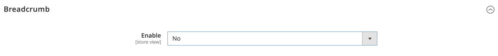
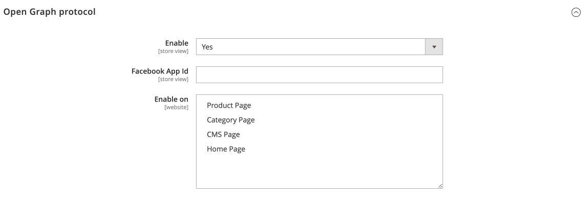

Rich Snippets
Configuration
Stores > Configuration > ECWHIM SEO > Rich Snippets
Breadcrumb

| FIELD | DESCRIPTION |
|---|---|
| Enable | Determines whether functionality for adding breadcrumb markup to product and category pages is enabled. Options: Yes / No |
Logo

| FIELD | DESCRIPTION |
|---|---|
| Enable | Determines whether functionality for adding logo markup to the home page is enabled. Options: Yes / No |
| Logo | A logo that is representative of the organization. |
Product
| FIELD | DESCRIPTION |
|---|---|
| Enable | Determines whether functionality for adding product markup to the product page is enabled. Options: Yes / No |
| Add Product Images | Determines the extent that images are included in the markup. Options: Base Only / All |
| Description | Determines the attribute whose value will be used in the markup for the description property. |
| MPN | Determines the attribute whose value will be used in the markup for the mpn property. If set to Do not add, the mpn property will not be included in the markup. |
| GTIN | Determines the attribute whose value will be used in the markup for the gtin property. If set to Do not add, the gtin property will not be included in the markup. |
| Brand | Determines the attribute whose value will be used in the markup for the brand property. If set to Do not add, the brand property will not be included in the markup. |
| Add Review | Determines whether to include the review property in the markup. Options: Yes / No |
| Add Aggregate Rating | Determines whether to include the aggregateRating property in the markup. Options: Yes / No |
| Best Rating | The highest value allowed in this rating system. Options: 5 / 10 / 100 |
| Price Valid Until | The date after which the price is no longer available. |
| Add Weight | Determines whether to include the weight property in the markup. Options: Yes / No |
| Item Condition | Defines an attribute whose value will be used to determine the value of the itemCondition property. If set to Default Value, the value of the itemCondition property is determined by the Item Condition Default Value setting. If set to Do not add, the itemCondition property will not be included in the markup. |
| Item Condition Default Value | Determines the default value of the itemCondition property. Options: New / Used / Damaged / Refurbished |
| Item Condition Values | Determines the value of the itemCondition property according to the value of the attribute specified in the Item Condition setting. |
Sitelinks Search Box
| FIELD | DESCRIPTION |
|---|---|
| Enable | Determines whether functionality for adding sitelinks search box markup to the home page is enabled. Options: Yes / No |
Open Graph protocol

Set Enable to Yes to see more settings.

| FIELD | DESCRIPTION |
|---|---|
| Enable | Determines whether functionality for adding Open Graph protocol markup to a web page is enabled. Options: Yes / No |
| Facebook App Id | Enter the Facebook App Id to use Facebook Insights. Insights lets you view analytics for traffic to your site from Facebook. |
| Enable on | Determines the types of pages for which the functionality for adding Open Graph protocol markup is enabled. Options: Product Page / Category Page / CMS Page / Home Page |
Twitter Cards

Set Enable to Yes to see more settings.

| FIELD | DESCRIPTION |
|---|---|
| Enable | Determines whether functionality for adding Twitter Card markup to a web page is enabled. Options: Yes / No |
| Twitter Username | The Twitter @username the card should be attributed to. |
| Enable on | Determines the types of pages for which the functionality for adding Twitter Card markup is enabled. Options: Product Page / Category Page / CMS Page / Home Page |